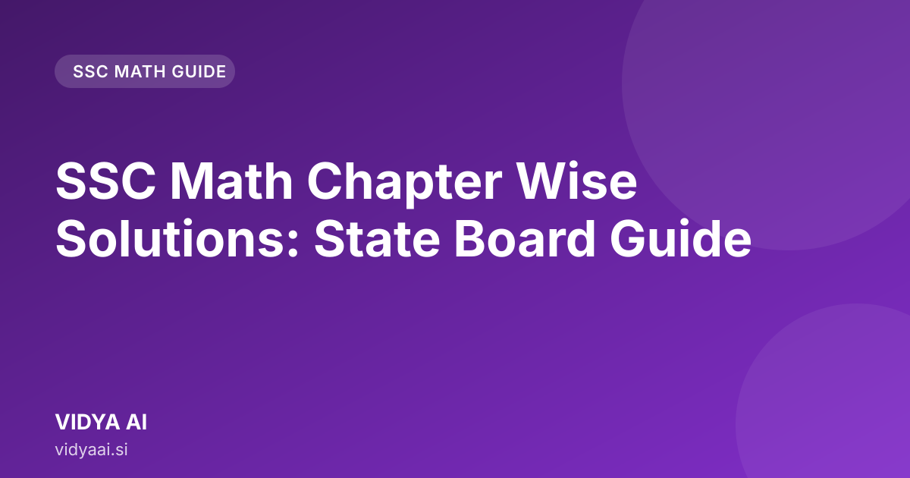

SSC Math Chapter Wise Solutions: State Board Guide

SSC Mathematics Chapter Wise Solutions: Why Targeted Practice Matters
Struggling with the vast syllabus of SSC Mathematics? Finding reliable ssc math chapter wise solutions that align with the Maharashtra State Board curriculum can be challenging. This guide breaks down key concepts and provides a clear roadmap to mastering every chapter, from Real Numbers to Statistics, ensuring you are prepared for your exams.
The SSC Mathematics syllabus is comprehensive. Simply reading the textbook is not enough to score well. You need to practice problems that mirror the exam pattern. Targeted practice means focusing on specific concepts within each chapter.
For students in Maharashtra, the key is to understand the logic behind the problems, not just memorize the answers. Whether you need ssc math solutions in Marathi or detailed English explanations, a step-by-step approach is crucial. This guide aims to provide that clarity for every major topic.
Chapter 1: Real Numbers - Key Concepts and Solved Examples
Real Numbers form the foundation of number theory in mathematics. The main focus here is on the properties of numbers and the concept of irrational numbers.
Key Concepts
- Rational and Irrational Numbers: A rational number can be written in the form $p/q$, where $p$ and $q$ are integers and $q$ is not zero. Irrational numbers cannot be written in this form (examples include $\sqrt{2}$ or $\pi$).
- HCF and LCM: Understanding how to find the Highest Common Factor and Least Common Multiple for large numbers is a frequent topic.
Example Focus
When solving problems involving the HCF and LCM of two numbers, always check if the numbers are co-prime. This simplifies the calculation significantly. For instance, finding the LCM of 12 and 18 is done through prime factorization.
Chapter 2: Polynomial - Understanding Roots and Factorization (English & Marathi)
Polynomial chapters test your understanding of algebraic expressions. You need to be comfortable finding the roots (solutions) and factoring expressions.
Finding Roots (English)
If a quadratic polynomial is given as $ax^2 + bx + c$, the roots are the values of $x$ that make the polynomial equal to zero.
Roots in Marathi (मराठीत)
जर आपल्याला $p(x) = ax^2 + bx + c$ हे बहुपद दिले असेल, तर त्याचे मूळ (roots) म्हणजे असे $x$ चे मूल्य जे $p(x)$ ला शून्य बनवते.
Factorization
Factorization is the reverse process of multiplication. Knowing identities like $(a+b)^2 = a^2 + 2ab + b^2$ helps immensely in simplifying complex expressions found in Chapter-wise math problems SSC.
Chapter 3: Pair of Linear Equations in Two Variables - Step-by-Step Solutions
This chapter is about finding the values of $x$ and $y$ that satisfy two linear equations simultaneously.
Methods of Solution
There are three standard methods:
- Substitution Method: Solve one equation for one variable and substitute that expression into the other equation.
- Elimination Method: Multiply equations by suitable numbers so that adding or subtracting them eliminates one variable.
- Cross-Multiplication Method: A formulaic approach used for solving systems of linear equations.
Concrete Example
If you have the equations:
- $2x + y = 7$
- $x - y = 2$
Using the Elimination Method, adding the two equations gives $3x = 9$, so $x=3$. Substituting $x=3$ into the second equation gives $3 - y = 2$, so $y=1$. The solution is $(3, 1)$.
Chapter 4: Quadratic Equations - Solving by Formula and Completing the Square
Quadratic equations are equations of the form $ax^2 + bx + c = 0$. Mastering the solutions is key to scoring high.
The Quadratic Formula
The most reliable way to solve any quadratic equation is using the formula: $$x = \frac{-b \pm \sqrt{b^2 - 4ac}}{2a}$$
Completing the Square
While the formula works every time, "Completing the Square" is a fundamental algebraic skill. It involves manipulating the equation to form a perfect square trinomial. Practice this method as it is often tested in board exams.
Chapter 5: Arithmetic Progression (AP) - Finding Terms and Sums
Arithmetic Progression (AP) is a sequence where the difference between consecutive terms is constant. This constant difference is called the common difference ($d$).
Key Formulas
- $n^{th}$ term ($a_n$): $a_n = a + (n-1)d$
- Sum of $n$ terms ($S_n$): $S_n = \frac{n}{2} [2a + (n-1)d]$
Application Example
If the first term ($a$) is 5 and the common difference ($d$) is 3, finding the 10th term requires the formula: $a_{10} = 5 + (10-1)3 = 5 + 9 \times 3 = 5 + 27 = 32$.
Chapter 6: Trigonometry - Mastering Identities and Applications
Trigonometry deals with the relationships between the sides and angles of triangles. For the Maharashtra Board, mastering the identities is essential.
Essential Identities
- $\sin^2 \theta + \cos^2 \theta = 1$
- $1 + \tan^2 \theta = \sec^2 \theta$
- $1 + \cot^2 \theta = \csc^2 \theta$
Application Focus
When solving problems involving heights and distances (applications of trigonometry), always draw a clear diagram first. This helps you correctly identify which trigonometric ratio ($\sin, \cos, \tan$) to use based on the given information (Opposite, Adjacent, Hypotenuse).
Chapter 7: Circles - Theorems and Problem Solving
This chapter focuses on the properties of circles, tangents, and chords. Understanding the theorems is more important than memorizing definitions.
Important Theorems to Remember
- The tangent at any point of a circle is perpendicular to the radius through the point of contact.
- Equal chords subtend equal angles at the centre.
Problem Solving Strategy
When a diagram involving a circle is provided, always start by identifying the center and the radius. Then, apply the relevant theorems to relate the lengths of the tangents or the positions of the chords.
Chapter 8: Statistics - Mean, Median, and Mode Calculations
Statistics helps in summarizing data. The three main measures—Mean, Median, and Mode—provide different aspects of the data set.
Mean (Average)
The mean is the sum of all observations divided by the total number of observations.
Median (Middle Value)
The median is the middle value when the data is arranged in ascending or descending order. If the number of observations is even, the median is the average of the two middle terms.
Mode (Most Frequent)
The mode is the value that appears most frequently in the data set.
Chapter 9: Probability and Miscellaneous Topics
Probability is a crucial concept. It measures the likelihood of an event occurring.
Basic Probability
Probability of an event = (Number of favorable outcomes) / (Total number of possible outcomes).
For example, the probability of getting a head when tossing a coin is $1/2$.
Mastering SSC Math Solutions with an AI Tutor
Covering all these topics requires consistent practice and instant doubt clearing. Sometimes, you might get stuck on a specific type of question, whether it’s a complex quadratic equation or a difficult geometry proof.
This is where having an offline math tutor for SSC becomes helpful. You do not need to worry about internet connectivity or scheduling. You can practice anytime, anywhere, right on your phone.
For detailed, step-by-step guidance that is perfectly aligned with the Maharashtra State Board syllabus, check out VIDYA AI. It offers bilingual support, making complex concepts easier to grasp for both students and parents.
Quick Revision Checklist
| Topic | Key Concept to Review |
|---|---|
| Real Numbers | HCF/LCM using Prime Factorization |
| Polynomial | Relationship between roots and coefficients |
| Linear Equations | Consistency and unique solutions |
| Quadratic Equations | Applying the Quadratic Formula |
| AP | Formula for $n^{th}$ term and Sum |
| Trigonometry | Reciprocal and Quotient Identities |
| Statistics | Calculating Mean, Median, and Mode |
Further reading across our network: [AI HR Solutions for SMEs: Compliance & Growth](https://hrms.businessos.si/blog/ai-powered-hr-solutions-for-smes/ "AI HR Solutions for SMEs: Compliance & Growth") · Offline Voice Assistant for Teachers: Class without Lag
Conclusion
Success in SSC Mathematics is about consistent, focused effort. By understanding the core concepts of each chapter—from the properties of Real Numbers to the calculations in Statistics—you build a strong foundation. Use this guide as your conceptual roadmap, and use tools like VIDYA AI to get the precise, step-by-step ssc math chapter wise solutions you need to turn confusion into confidence. Start practicing smart today!
Frequently asked questions
Bilingual support kase madat karto?
VIDYA AI English ani Marathi madhe samjhane dete, jyamule concept chi gahri samajh yete. Jar kahi confusion hoto tar donhi bhashay madhe uttar milte.
SSC Math chapter wise solutions kothe milvel?
Vidya AI provides detailed, chapter-wise solutions specifically tailored for the Maharashtra State Board curriculum. Access clear explanations for every major topic.
SSC Math solutions Marathi madhe milta ka?
Yes, we offer both English and Marathi explanations for key concepts and solved examples, ensuring every student can understand the material easily.